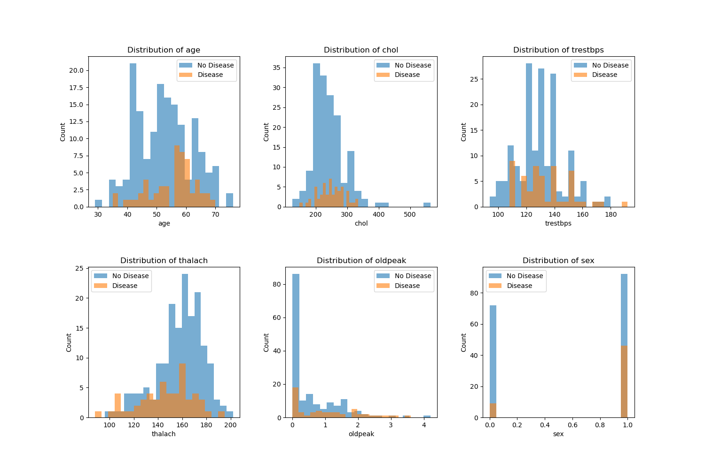
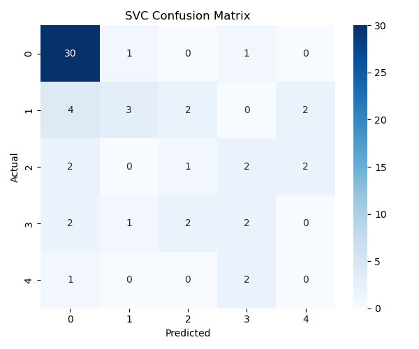

| Unnamed: 0 | Column | Type | Non-Null Count | Null Count | |
|---|---|---|---|---|---|
| 0 | 0 | age | float64 | 303 | 0 |
| 1 | 1 | sex | float64 | 303 | 0 |
| 2 | 2 | cp | float64 | 303 | 0 |
| 3 | 3 | trestbps | float64 | 303 | 0 |
| 4 | 4 | chol | float64 | 303 | 0 |
| 5 | 5 | fbs | float64 | 303 | 0 |
| 6 | 6 | restecg | float64 | 303 | 0 |
| 7 | 7 | thalach | float64 | 303 | 0 |
| 8 | 8 | exang | float64 | 303 | 0 |
| 9 | 9 | oldpeak | float64 | 303 | 0 |
| 10 | 10 | slope | float64 | 303 | 0 |
| 11 | 11 | ca | object | 303 | 0 |
| 12 | 12 | thal | object | 303 | 0 |
| 13 | 13 | target | int64 | 303 | 0 |
Heart Disease Prediction Model
Summary
Heart disease is one of the leading causes of death globally, and early detection is critical for prevention and treatment (R. Detrano (1989)). In this project, we use the UCI Heart Disease (UCI Machine Learning Repository (n.d.)) dataset to build a machine-learning model that predicts whether a patient is likely to have heart disease based on clinical and physiological attributes. We load the dataset directly from the web, clean and wrangle the data, perform exploratory data analysis (EDA), and train a classification model (SVC) to identify important predictors of heart disease. Our results highlight key risk indicators that align with well-known medical knowledge, demonstrating how machine learning can support early screening and clinical decision-making.
Introduction
The objective of this project is to develop a predictive model that determines whether a patient is at risk of heart disease using a set of clinical measurements. Heart disease diagnoses often rely on many interacting factors such as chest pain symptoms, blood pressure, cholesterol levels, and exercise response. Machine-learning models can help uncover patterns in these variables and support early identification of high-risk patients.
Our research question is:
“Given a patient’s clinical and physiological attributes, can we accurately predict whether they have heart disease?”
To answer this question, we use the publicly available Heart Disease dataset from the UCI Machine Learning Repository. This dataset contains multiple medically relevant variables, making it suitable for a classification model such as a SVC.
Dataset Description
We use the Heart Disease dataset from the UCI Machine Learning Repository, a widely used benchmark dataset for medical prediction tasks. The dataset includes the following 14 attributes:
- Age
- Sex
- Chest Pain Type (cp)
- Resting Blood Pressure (trestbps)
- Cholesterol (chol)
- Fasting Blood Sugar (fbs)
- Resting ECG results (restecg)
- Maximum heart rate achieved (thalach)
- Exercise induced angina (exang)
- ST depression (oldpeak)
- Slope of ST segment (slope)
- Number of major vessels (ca)
- Thalassemia result (thal)
- num (Target: the predicted attribute (0 = no heart disease, 1 = heart disease))
These variables include both continuous and categorical measurements commonly used in clinical diagnostics.
The following table Table 1 shows the type of each measurement and the number of null and non-null counts in the dataset.
Methodology
We build a machine-learning classification model using the UCI Heart Disease dataset:
Load data from the original source on the web: https://archive.ics.uci.edu/dataset/45/heart+disease
Wrangle and clean the data
Replace missing values Assign meaningful column names Convert categorical variables to numeric where needed Ensure that the target variable is binary (0 = no heart disease, 1 = heart disease) Perform exploratory data analysis (EDA) Summary statistics for continuous variables Count plots for categorical variables Histograms and boxplots to understand feature distributions Create visualizations relevant to the classification task Pairplots to explore relationships between key features Distribution of target classes Feature correlation matrix Build a classification model A SVC model is trained to predict heart disease. We split the dataset into training and testing subsets and evaluate model accuracy. Visualize the model results Plot of the trained SVC model Feature importance bar chart
Importing the Dataset
A special note about our data download process: The following code downloads the zip file from UCI’s website, unpacks them, and grabs the data of interest (Cleveland data). It is then processed minimally by adding the correct column names, and finally written out as a CSV to the data/processed folder.
In our actual analysis, we fetch the same data directly using UCI’s own ucimlrepo library. The data is the same. But we include this part to show how you can download the data without UCI’s own library.
Data Validation
Data validation include ALL the checks you wrote: - Data Type Check - Missing Values Check - Duplicate Check - Category Level Check - Logical Ranges Check - Train/Test Leakage Check
Exploratory Data Analysis (EDA)
We start by calculating some statistics for all the features:
| Unnamed: 0 | age | sex | cp | trestbps | chol | fbs | restecg | thalach | exang | oldpeak | slope | target | |
|---|---|---|---|---|---|---|---|---|---|---|---|---|---|
| 0 | count | 303.000000 | 303.000000 | 303.000000 | 303.000000 | 303.000000 | 303.000000 | 303.000000 | 303.000000 | 303.000000 | 303.000000 | 303.000000 | 303.000000 |
| 1 | mean | 54.438944 | 0.679868 | 3.158416 | 131.689769 | 246.693069 | 0.148515 | 0.990099 | 149.607261 | 0.326733 | 1.039604 | 1.600660 | 0.937294 |
| 2 | std | 9.038662 | 0.467299 | 0.960126 | 17.599748 | 51.776918 | 0.356198 | 0.994971 | 22.875003 | 0.469794 | 1.161075 | 0.616226 | 1.228536 |
| 3 | min | 29.000000 | 0.000000 | 1.000000 | 94.000000 | 126.000000 | 0.000000 | 0.000000 | 71.000000 | 0.000000 | 0.000000 | 1.000000 | 0.000000 |
| 4 | 25% | 48.000000 | 0.000000 | 3.000000 | 120.000000 | 211.000000 | 0.000000 | 0.000000 | 133.500000 | 0.000000 | 0.000000 | 1.000000 | 0.000000 |
| 5 | 50% | 56.000000 | 1.000000 | 3.000000 | 130.000000 | 241.000000 | 0.000000 | 1.000000 | 153.000000 | 0.000000 | 0.800000 | 2.000000 | 0.000000 |
| 6 | 75% | 61.000000 | 1.000000 | 4.000000 | 140.000000 | 275.000000 | 0.000000 | 2.000000 | 166.000000 | 1.000000 | 1.600000 | 2.000000 | 2.000000 |
| 7 | max | 77.000000 | 1.000000 | 4.000000 | 200.000000 | 564.000000 | 1.000000 | 2.000000 | 202.000000 | 1.000000 | 6.200000 | 3.000000 | 4.000000 |
Next we look at number of unique values of each feature:
| Unnamed: 0 | 0 | |
|---|---|---|
| 0 | age | 41 |
| 1 | sex | 2 |
| 2 | cp | 4 |
| 3 | trestbps | 50 |
| 4 | chol | 152 |
| 5 | fbs | 2 |
| 6 | restecg | 3 |
| 7 | thalach | 91 |
| 8 | exang | 2 |
| 9 | oldpeak | 40 |
| 10 | slope | 3 |
| 11 | ca | 5 |
| 12 | thal | 4 |
| 13 | target | 5 |
The plots below are distribution of various features color coded by the target value (Disease or No Disease):

Modeling Section
Column Transformations
The analysis dataset was split into two sets, training and test sets. A 80/20 split was utilized, along with stratification on the target variable, to preserve class proportions across splits. Predictors were grouped into three categories: numerical features (age, trestbps, chol, thalach, oldpeak), categorical features (cp, restecg, slope, ca, thal), and binary (sex, fbs, exang). A scikit-learn ColumnTransformer was used to apply StandardScaler to the numerical columns, one-hot encoding to the categorical features,and passs through the binary featuressoo they remain unchanged. These transformations ensured that all features were on appropriate scales and in a numeric format suitable for our SVC model, while keeping all preprocessing steps encapsulated within the modeling pipeline to avoid data leakage.
Create the Pipeline
The column transformer and the Support Vector Classifier (SVC) were combined into a single pipeline. This way, we ensure that for each resampling split, the preprocessing steps are fit exclusively on the training portion of the dataset and subsequently applied to the validation portion. This design yields a more realistic assessment of model performance and prevents information from the test folds from influencing the training process.
Crossvalidation
On the training set, we applied a 5-fold cross-validation using the cross_validate function, with both training and validation scores reported for each fold. The results were aggregated to compute the mean and standard deviation across the cross-validation folds, which allows us to generate a summary of the model’s performance and its variability.
Fit the Model
After cross-validation, the final SVC pipeline was fit on the full training set. The fitted pipeline was then used to generate predictions on the held-out test set, enabling an out-of-sample evaluation of classification performance.
| Unnamed: 0 | 0 | 1 | 2 | 3 | 4 | accuracy | macro avg | weighted avg | |
|---|---|---|---|---|---|---|---|---|---|
| 0 | precision | 0.769231 | 0.600000 | 0.200000 | 0.285714 | 0.0 | 0.6 | 0.370989 | 0.576923 |
| 1 | recall | 0.937500 | 0.272727 | 0.142857 | 0.285714 | 0.0 | 0.6 | 0.327760 | 0.600000 |
| 2 | f1-score | 0.845070 | 0.375000 | 0.166667 | 0.285714 | 0.0 | 0.6 | 0.334490 | 0.572232 |
| 3 | support | 32.000000 | 11.000000 | 7.000000 | 7.000000 | 3.0 | 0.6 | 60.000000 | 60.000000 |

Predict (X_test) and compare with Actuals (y_test)
Discussion
The SVC model was able to identify meaningful patterns to predict heart disease based on the data, with a test score of 0.61 and train score of 0.78. Based on these results, it might indicate that there was some overfitting based on the large difference between training and test results.
From the EDA (Figure 1), we see that various features such as age, sex, chol and more have clear differences in their distribution between disease and no disease which will help the model to predict between the two. For a better predictor, we may want to incorporate additional features given the complexity of heart disease.
The confusion matrix (Figure 2) shows that the model captures meaningful patterns but sometimes misclassifies borderline cases. Additional feature engineering or alternative models may improve performance.
Results and Conclusion
Our analysis shows that several clinical features differ noticeably between patients with and without heart disease. As seen in the EDA histograms, patients with heart disease tend to have higher resting blood pressure (trestbps), higher ST-depression values (oldpeak), and lower maximum heart rate achieved (thalach) compared to individuals without disease. After preprocessing the dataset using scaling for numerical variables and one-hot encoding for categorical variables, we trained a Support Vector Classifier (SVC) model. Cross-validation results indicate an average test accuracy of 0.61, with a higher training accuracy of 0.78, suggesting some overfitting. When evaluating predictions on the unseen test set, the model correctly identified many cases but also showed several misclassifications, especially where the model predicted “0” (no disease) but the true label was “1” or “2.” Overall, while the model captures meaningful patterns in the dataset, its moderate predictive performance suggests that further tuning, alternative models, or feature engineering may be needed to improve accuracy and reduce classification bias.
References
R. Detrano, W. Steinbrunn, A. Jánosi. 1989. “International Application of a New Probability Algorithm for the Diagnosis of Coronary Artery Disease.” American Journal of Cardiology.
UCI Machine Learning Repository. n.d. “UCI Machine Learning Repository: Heart Disease Dataset.” https://archive.ics.uci.edu/dataset/45/heart+disease.